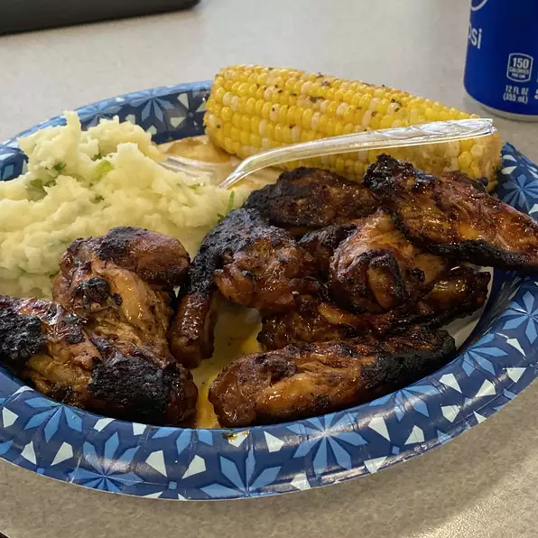

Grill Master Chicken Wings

Grill Master Chicken Wings
These wings are always a hit! I grill them up before a party and keep them hot in a low oven. I always use Frank's RedHot® sauce. It's got lots of flavor and isn't too spicy.
Ingredients for the Wings:
- ½ cup soy sauce
- ½ cup Italian-style salad dressing
- 3 pounds chicken wings, cut apart at joints, wing tips discarded
Ingredients for the Sauce:
- ¼ cup butter
- 1 teaspoon soy sauce
- ¼ cup hot pepper sauce (such as Frank's RedHot®), or to taste
Steps
- Combine 1/2 cup soy sauce, Italian dressing, and chicken wings in a large, zip-top bag. Close bag and refrigerate 4 hours to overnight.
- Preheat an outdoor grill for medium heat. In a small saucepan, melt the butter. Stir in the 1 teaspoon soy sauce and the hot pepper sauce. Turn off heat and reserve.
- Remove the chicken wings from the marinade and pat dry. Cook the wings on the preheated grill, turning occasionally, until the chicken is well browned and no longer pink, 25 to 30 minutes.
- Place grilled wings in a large bowl. Pour butter sauce over wings; toss to mix well.